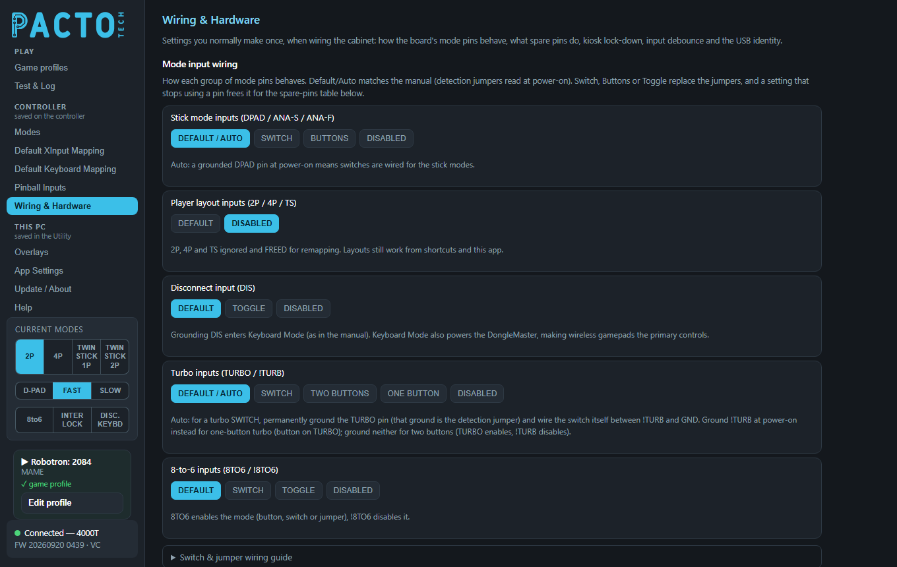
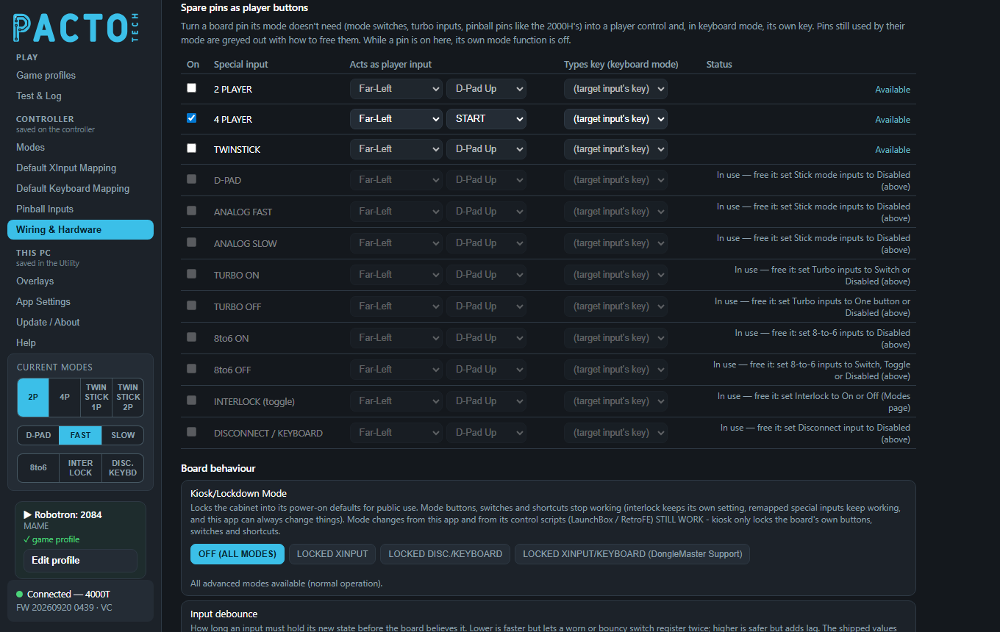
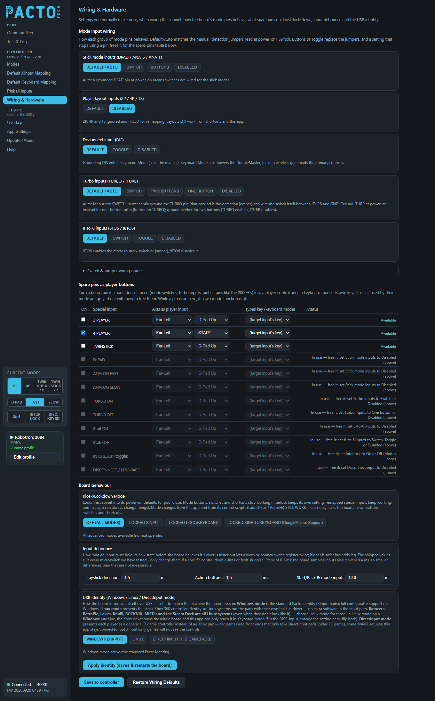

Settings you normally make once, when wiring the cabinet: how the board's mode pins behave, what spare pins do, kiosk lock-down, input debounce and the USB identity.

DISABLED), then the folded Switch & jumper wiring guide.This page is in the Controller group of the sidebar. Everything on it is stored on the board, so the controller must be plugged in to see and change it. Nothing reaches the board until you press Save to controller at the bottom, except the USB identity, which has its own button.
This section controls the board's dedicated mode pins: the header pins for mode buttons, switches and
jumpers. All of them are optional. DEFAULT (or DEFAULT / AUTO) works the way the printed
manual describes, with detection jumpers read at power-on. If you pick any other type here, no detection jumpers
are needed at all, because the app setting replaces them. Any setting that stops using a pin frees that pin,
so you can use it under Spare pins as player buttons further down this page.
Each group of mode pins has its own row. The note under each row explains what the current choice does.
| Group | Choices | What the choices mean |
|---|---|---|
| Stick mode inputs (DPAD / ANA-S / ANA-F) | DEFAULT / AUTO · SWITCH · BUTTONS · DISABLED |
Auto: a grounded DPAD pin at power-on means the stick modes are wired as switches.
SWITCH: the pins are treated as switches, and the DPAD detection ground is no longer needed.
BUTTONS: the pins are treated as buttons.
DISABLED: all three pins are ignored and freed. |
| Player layout inputs (2P / 4P / TS) | DEFAULT · DISABLED |
Default: the pins work as jumpers, switches or buttons, as in the manual.
DISABLED: 2P, 4P and TS are ignored and freed. |
| Disconnect input (DIS) | DEFAULT · TOGGLE · DISABLED |
Default: grounding DIS enters keyboard mode (as in the manual), which also powers the DongleMaster.
TOGGLE: each press of DIS switches keyboard mode in and out, with no hold needed.
The other mode inputs then keep working inside keyboard mode instead of exiting it.
DISABLED: DIS is ignored and freed. |
| Turbo inputs (TURBO / !TURB) | DEFAULT / AUTO · SWITCH · TWO BUTTONS · ONE BUTTON · DISABLED |
Auto: see the wiring note below.
SWITCH: a switch wired to !TURB, with TURBO freed and no detection ground needed.
TWO BUTTONS: TURBO turns turbo on and !TURB turns it off.
ONE BUTTON: a single button on TURBO toggles turbo, and !TURB is freed.
DISABLED: both pins are ignored and freed. The long-hold shortcuts still work. |
| 8-to-6 inputs (8TO6 / !8TO6) | DEFAULT · SWITCH · TOGGLE · DISABLED |
Default: 8TO6 turns the mode on (button, switch or jumper) and !8TO6 turns it off.
SWITCH: a switch on 8TO6 (closed = on, open = off), with !8TO6 freed.
TOGGLE: one button on 8TO6 toggles the mode, with !8TO6 freed.
DISABLED: both pins are ignored and freed. |
Turbo in Auto: for a turbo switch, permanently ground the TURBO pin (that ground is the
detection jumper) and wire the switch itself between !TURB and GND. Grounding !TURB at
power-on instead gives one-button turbo (button on TURBO). If you ground neither, you get two buttons
(TURBO turns turbo on, !TURB turns it off).
If your board doesn't have the pins for a group, that group stays visible but greyed out, with a note saying so. Those modes still work from the app, shortcuts and scripts, and Buttons that trigger modes and pinball inputs on Default XInput Mapping can put them on any player button. While kiosk lock-down is on, it overrides all of these groups.
Click Switch & jumper wiring guide under the groups to open this table:
| Function | Wiring |
|---|---|
| Slow-analog switch | Ground the DPAD pin, then wire the switch to ANA-S |
| Fast-analog switch | Ground the DPAD pin, then wire the switch to ANA-F |
| 4-player switch | Ground the 2P pin, then wire the switch to 4P |
| Twinstick switch | Ground the 2P pin, then wire the switch to TS |
| Disconnect switch | Ground the 2P pin, then wire the switch to DIS |
| Turbo switch | Ground the TURBO pin, then wire the switch to !TURB (or set Turbo
inputs to SWITCH and skip the TURBO ground) |
| 8-to-6 switch | Ground the !8TO6 pin, then wire the switch to 8TO6 |
| Interlock | Jumper the INT pin to ground (or force it with the
Interlock setting on the Modes page) |
3-position switches: for stick modes, ground ANA-F and wire DPAD /
ANA-S to the outer positions. For player modes, ground 2P and wire 4P /
TS to the outer positions.
The grounds also decide which mode a switch's OFF position selects. Keep them even when you choose
SWITCH in the app; only their power-on detection role becomes optional.

4 PLAYER is ticked (the player layout pins were disabled above);
the stick-mode, turbo, 8-to-6, interlock and disconnect pins are still in use, so they are greyed out with a note
saying how to free them.Your board has dedicated mode inputs: player-layout pins, stick-mode pins, TURBO, 8TO6, INT, DIS and, on some
boards, right-stick and pinball pins (like the 2000H's). If you don't use one for its mode, this table turns it into an
extra player control and, in keyboard mode, its own key. For example, a spare pin can become a player's
LT. The table only lists pins your board actually has. While a pin is ticked here, its own mode function
is off.
| Column | Meaning |
|---|---|
On | Tick to use this pin as a player control. |
Special input | The board pin, for example TURBO ON, 8to6 OFF,
RIGHT-STICK, Nudge Left or PINBALL A. |
Acts as player input | Two drop-downs. The first picks whose control it becomes (a
cabinet position or a fixed player). The second picks which control: a direction, a button, LT
or RT. |
Types key (keyboard mode) | The key it types while the board is in keyboard mode. Leave it on
(target input's key) to type whatever key the player input it acts as types on
Default Keyboard Mapping. |
Status | Whether the pin is free to use (see below). |
| Status | Meaning |
|---|---|
Available | The pin is free. Tick On and choose what it acts as. |
In use — free it: … | Its mode still needs it, so the row is greyed out and can't be ticked. The note says which setting frees it (see the list below). |
Remap overrides the mode function | The pin is ticked here but its mode setting still uses it. The mapping wins. |
How to free each pin:
| Pins | Freed when |
|---|---|
2 PLAYER, 4 PLAYER, TWINSTICK | Player layout inputs are DISABLED |
D-PAD, ANALOG FAST, ANALOG SLOW | Stick mode inputs are DISABLED |
TURBO ON | Turbo inputs are SWITCH or DISABLED |
TURBO OFF | Turbo inputs are ONE BUTTON or DISABLED |
8to6 ON | 8-to-6 inputs are DISABLED |
8to6 OFF | 8-to-6 inputs are SWITCH, TOGGLE or DISABLED |
INTERLOCK (toggle) | Interlock mode is On or Off (Modes page) |
DISCONNECT / KEYBOARD | Disconnect input is DISABLED |
RIGHT-STICK and the pinball pins | Always available |
While kiosk lock-down is on, it frees every mode pin it locks. The INT pin still follows the interlock
setting, and in LOCKED XINPUT/KEYBOARD (DongleMaster Support) the DIS pin stays the keyboard
switch.
The first Acts as player input drop-down lists the physical stick positions on the cabinet:
Far-Left, Mid-Left, Mid-Right and Far-Right on 4-player boards
(Left, Middle, Right on 3-player boards; Left, Right on
2-player boards), then Player N - Fixed. A position keeps working when 2-player or 4-player mode reorders
the players. Player N - Fixed follows the Xbox player number after reordering instead.
Set the group that owns the pin to DISABLED above, for example Turbo inputs. Then tick
On for that pin in this table, pick a player input for it, choose a key such as P (pause in
MAME) under Types key, and click Save to controller.
Kiosk mode locks the cabinet into its power-on defaults for public use. The board's own mode buttons, switches and shortcuts stop working. Mode changes from this app, its control scripts (LaunchBox / RetroFE) and PC hotkeys still work. Interlock keeps its own setting, and spare pins keep working.
| Choice | What happens |
|---|---|
OFF (ALL MODES) | Normal operation: all modes available. |
LOCKED XINPUT | Locked to XInput with the power-on defaults. There's no mode switching from the board, and every mode pin is freed. |
LOCKED DISC./KEYBOARD | Locked to keyboard mode (the board boots straight into it). There's no mode switching from the board, and every mode pin is freed. |
LOCKED XINPUT/KEYBOARD (DongleMaster Support) | Everything is locked except the
DIS input. Pressing it switches between XInput (arcade controls) and keyboard mode, and keyboard mode
also powers the DongleMaster so wireless gamepads become the main controls. All other mode pins are freed. |
While kiosk mode is on, the Mode input wiring groups above are locked. On a 4000H2 whose DIP1 (kiosk lock-down) switch is on, the note under the buttons says the lock is held on by that switch and can't be cleared from the app.
Debounce is how long an input must stay in its new state before the board believes it. This setting only appears when your board's firmware supports it.
| Field | Shipped value |
|---|---|
| Joystick directions | 1.5 ms |
| Action buttons | 1.5 ms |
| Start/Back & mode inputs | 10 ms |
Values go from 0.1 to 25.5 ms in steps of 0.1 ms. The board checks its inputs about every 0.4 ms, so differences smaller than that can't be measured. Lower values respond faster, but a worn or bouncy switch may register twice. Higher values are safer but add lag.
This controls how the board introduces itself over USB, so set it to match the machine the board lives in. The setting only appears when your board's firmware supports it.
| Choice | Use it for |
|---|---|
WINDOWS (XINPUT) | The standard Pacto identity (XInput pads), with full Utility support on Windows. This is the default. |
LINUX | Linux systems. The board presents the stock Xbox 360 controller identity, so the system's own built-in driver runs the pads. Batocera, RetroPie, Lakka, Knulli, ROCKNIX, MiSTer and the Steam Deck are all Linux systems, even when they don't look like it. |
DIRECTINPUT (HID GAMEPADS) | Games and front ends that only accept DirectInput pads (older PC games, some MAME setups). Each player becomes a generic HID game controller. The Utility stays connected, but XInput-only games won't see the controls. |
Picking a choice doesn't change anything yet. Click Apply identity (saves & restarts the board) and confirm: the board saves the setting and restarts with the new identity. This button has its own save and is not part of Save to controller. The line under the choices says which identity is active.
DISS. input (keyboard mode),
change the setting here, then flip it back.
DEFAULT, kiosk on
OFF (ALL MODES) (unless a 4000H2's DIP1 switch holds it on), debounce on the shipped values, and clears
the spare-pins table. It doesn't change the USB identity. It only fills in the page, so press Save to
controller to keep it.